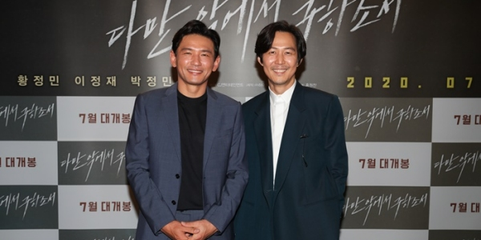
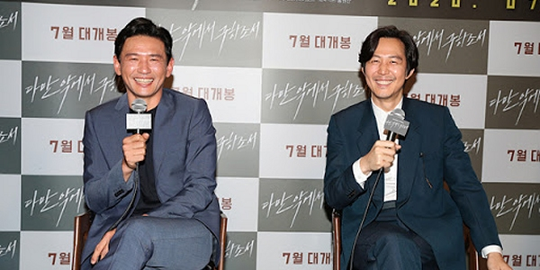
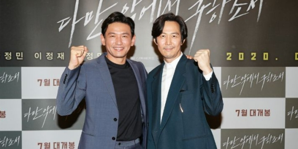
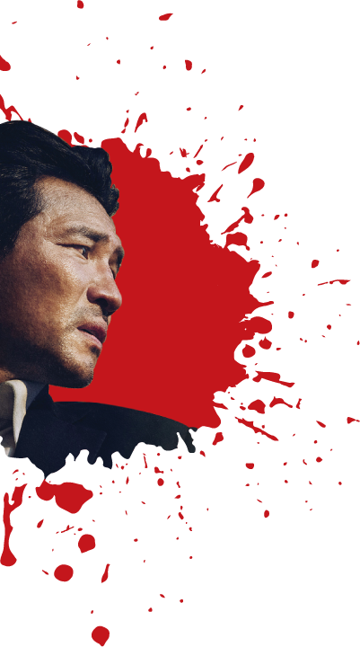
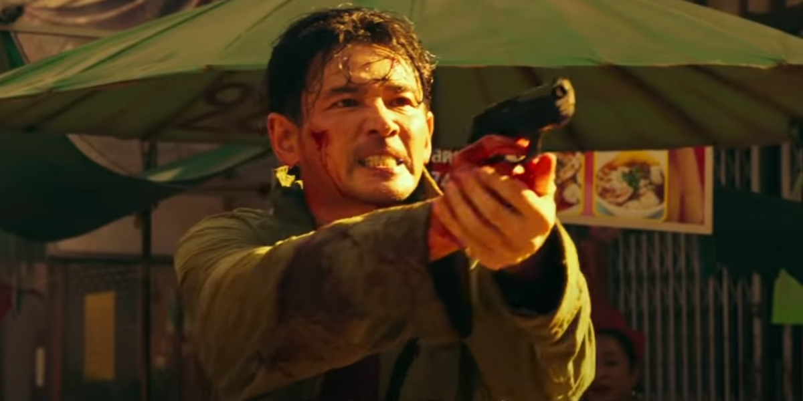

시놉시스
태국에서 충격적인 납치사건이 발생하고 마지막 청부살인 미션을 끝낸 암살자 인남(황정민)은 그것이 자신과 관계된 것임을 알게 된다. 인남은 곧바로 태국으로 향하고, 조력자 유이(박정민)를 만나 사건을 쫓기 시작한다. 한편, 자신의 형제가 인남에게 암살당한 것을 알게 된 레이(이정재). 무자비한 복수를 계획한 레이는 인남을 추격하기 위해 태국으로 향하는데... 처절한 암살자 VS 무자비한 추격자 멈출 수 없는 두 남자의 지독한 추격이 시작된다!
인터뷰사진
개봉 2주차 400만 돌파 기념 축하 인터뷰
- 
- 
- 
-
뉴스
-
평점
-
후기

THE BIRTH OF A NEW WORLD OF ACTION
THAT I'VE NEVER SEEN BEFORE.
주요인물소개
-

버림 받은 암살자 인남
(황정민 역)
-
냉혹한 살인마 레이
(이정재 역)
-
정 많은 조력자 유이
(박정민 역)